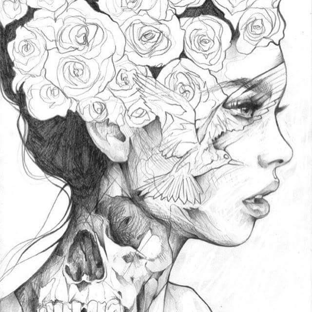

Emmanuelle Rose

"it's never too late to be what you might have been"
that's the motto that she lives by. she's eccentric, audacious and
and kind (still needs to be verified lol). she likes to read, laugh and live. wanna know more about her?
then keep on reading!